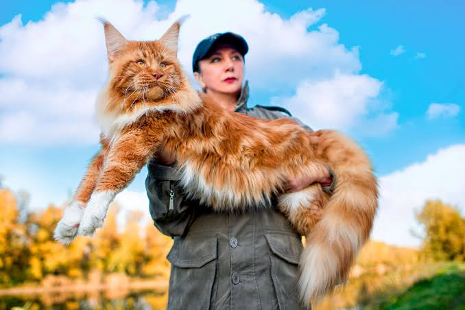

Animales y ética ciudadana
1. Hacia el fin de la crueldad: Prohibición de las corridas de toros y espectáculos animales
Posición: Estoy totalmente de acuerdo con la prohibición de las corridas de toros, las corralejas, las peleas de gallos y la explotación de animales de trabajo en Colombia.
Sustentación: Las tradiciones culturales no pueden utilizarse como un cheque en blanco para justificar la tortura, el sufrimiento o la muerte de seres sintientes. Si bien prácticas como la tauromaquia o las corralejas forman parte del legado histórico de diversas regiones, la cultura es dinámica y debe evolucionar a la par de la ética de la sociedad. En Colombia, el reconocimiento de los animales como seres sintientes (Ley 1774 de 2016) marcó un avance legal fundamental que exige coherencia en las políticas públicas.
Disfrutar o lucrarse con el dolor infligido a un animal deshumaniza a la sociedad. El entretenimiento o el arraigo cultural no están por encima del principio de compasión y respeto por la vida. Prohibir estos espectáculos e incentivar la reconversión laboral de quienes dependen de ellos es un paso indispensable para consolidar una cultura de paz, empatía y responsabilidad ética con las especies con las que compartimos el territorio.
2. Pólvora: Un peligro ambiental y un sufrimiento evitable
Posición: Estoy plenamente de acuerdo con prohibir el uso indiscriminado de la pólvora a nivel ciudadano, restringiendo su empleo únicamente a eventos oficiales de carácter excepcional, bajo manipulación estrictamente profesional y con normativas de impacto sonoro reducido.
Sustentación: La pólvora representa una triple amenaza: para la salud pública, el medioambiente y los animales. Año tras año, las cifras de niños y adultos lesionados con quemaduras irreversibles demuestran que el uso doméstico de la pirotecnia es incontrolable e irresponsable. Sin embargo, su impacto más invisibilizado recae sobre la fauna doméstica y silvestre. El ruido ensordecedor y las explosiones repentinas generan en perros y gatos cuadros severos de taquicardia, pánico, desorientación, huidas desesperadas e incluso paros cardiorrespiratorios. En la fauna silvestre, especialmente las aves, los estallidos nocturnos provocan el abandono masivo de nidos y muertes por desorientación.
El derecho a la celebración no puede sobrepasar la integridad física ni el bienestar de otros seres vivos. La regulación debe ser drástica, limitando la pirotecnia a espectáculos institucionales aislados que utilicen tecnologías de bajo ruido y promoviendo alternativas modernas como los shows de drones e iluminación láser.
3. Reflexión y anhelo: La búsqueda de un vínculo con un animal de compañía

Mi sueño es un gato llamado Lazuli de la raza maine coon
Experiencia personal: Hasta el momento no he tenido la oportunidad de vivir o convivir directamente con un animal de compañía en mi hogar. Sin embargo, este hecho lejos de distanciarme de la causa animalista, ha fortalecido mi deseo de compartir mi vida en el futuro con un perro o un gato.
Reflexión: Entiendo la decisión de integrar un animal a la vida personal como un acto de profunda responsabilidad y compromiso ético, no como la adquisición de un objeto o un adorno. Observar la lealtad, la sensibilidad y la capacidad de afecto de perros y gatos me reafirma que convivir con uno de ellos enseña empatía, paciencia y cuidado mutuo. Mi meta futura de adoptar a un perro o un gato nace del deseo sincero de brindarle un hogar seguro, respetando su naturaleza y reconociendo que la relación entre un ser humano y su animal de compañía es una de las expresiones de reciprocidad más genuinas que existen.